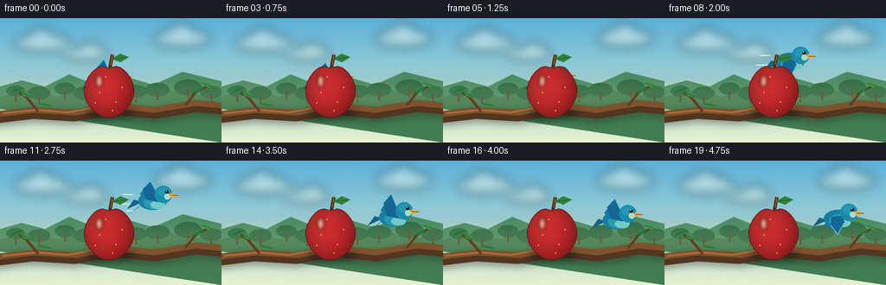
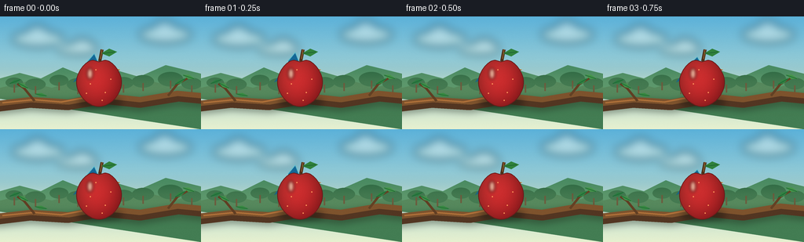
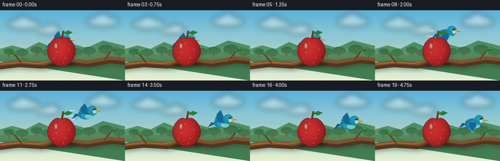
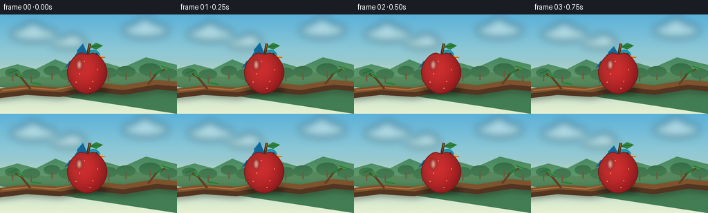
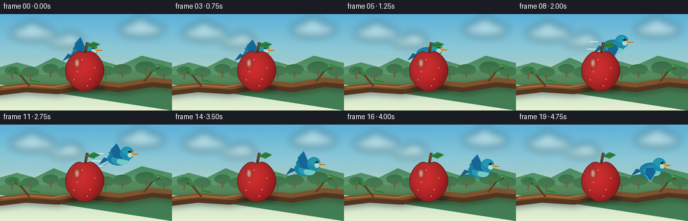

CODING AGENTS AS PIXEL WORLD MODELS
traex/GPT-5.6-Sol · dynamic_spatial_relationship_0036
点击播放 · 原生 RGB 像素
逐轮保存的候选
回放视频、检查图与代码变化。
每份候选均可单独播放。实际图片检查记录在下方工具轨迹中。
候选 01播放与检查图
点击播放 · 原生 RGB 像素


展开代码变化
--- 上一保存版本
+++ 本次保存版本
@@ -0,0 +1,193 @@
+from pathlib import Path
+import math
+import numpy as np
+from PIL import Image, ImageDraw, ImageFilter
+import artifact_io
+
+W,H,N,S = 256,144,20,4
+rng=np.random.default_rng(36)
+
+def sc(v): return int(round(v*S))
+def pts(ps): return [(sc(x),sc(y)) for x,y in ps]
+def ellipse(d, box, fill, outline=None, width=1):
+ d.ellipse(tuple(sc(v) for v in box), fill=fill, outline=outline, width=sc(width) if outline else 1)
+def line(d, xy, fill, width): d.line(pts(xy), fill=fill, width=sc(width), joint='curve')
+def poly(d, xy, fill): d.polygon(pts(xy), fill=fill)
+
+def smooth(x):
+ x=max(0,min(1,x)); return x*x*(3-2*x)
+
+def background():
+ # hand-painted vertical sky gradient
+ yy=np.linspace(0,1,H*S)[:,None,None]
+ top=np.array([92,178,218.],float); bot=np.array([231,241,208.],float)
+ arr=np.tile((top*(1-yy)+bot*yy),(1,W*S,1)).astype(np.uint8)
+ im=Image.fromarray(arr,'RGB')
+ # soft distant clouds
+ cloud=Image.new('RGBA',im.size,(0,0,0,0)); d=ImageDraw.Draw(cloud)
+ for b in [(15,18,82,39),(177,12,244,34),(72,35,126,49)]:
+ x0,y0,x1,y1=b
+ ellipse(d,(x0,y0,x1,y1),(255,252,227,95))
+ ellipse(d,(x0+17,y0-7,x0+48,y1),(255,255,242,105))
+ cloud=cloud.filter(ImageFilter.GaussianBlur(sc(6)))
+ im=Image.alpha_composite(im.convert('RGBA'),cloud)
+ d=ImageDraw.Draw(im)
+ # distant rolling orchard hills
+ hill=[(0,98),(0,79),(25,72),(52,79),(80,65),(112,78),(146,68),(177,77),(211,62),(256,73),(256,144)]
+ poly(d,hill,(74,142,100,255))
+ hill2=[(0,105),(0,91),(34,83),(66,91),(104,79),(145,92),(182,80),(224,90),(256,82),(256,144)]
+ poly(d,hill2,(67,125,83,255))
+ # distant tiny trees
+ for x,y,r in [(18,83,11),(45,85,13),(75,80,12),(99,85,14),(157,83,13),(182,81,14),(217,78,16),(244,84,13)]:
+ ellipse(d,(x-r,y-r*.45,x+r,y+r*.7),(46,108,69,255))
+ line(d,[(x,y+4),(x,y+14)],(92,75,49,255),2)
+ # sunny haze near horizon
+ haze=Image.new('RGBA',im.size,(0,0,0,0)); hd=ImageDraw.Draw(haze)
+ hd.rectangle((0,sc(70),sc(256),sc(112)),fill=(241,231,171,30))
+ haze=haze.filter(ImageFilter.GaussianBlur(sc(9)))
+ return Image.alpha_composite(im,haze)
+
+BG=background()
+
+def draw_branch(im):
+ # cast shadow beneath the foreground branch
+ sh=Image.new('RGBA',im.size,(0,0,0,0)); sd=ImageDraw.Draw(sh)
+ line(sd,[(-12,119),(38,113),(86,116),(132,108),(178,113),(227,105),(268,109)],(30,40,24,95),14)
+ sh=sh.filter(ImageFilter.GaussianBlur(sc(4))); im.alpha_composite(sh)
+ d=ImageDraw.Draw(im)
+ line(d,[(-12,116),(38,110),(86,113),(132,105),(178,110),(227,102),(268,106)],(83,54,34,255),13)
+ line(d,[(-12,112),(39,106),(87,109),(132,101),(178,106),(226,98),(268,102)],(126,83,45,255),7)
+ line(d,[(3,110),(43,106),(78,109),(116,102)],(175,113,58,170),2)
+ # twigs and leaves around, but not cluttering the subjects
+ line(d,[(44,108),(31,92),(22,86)],(97,62,35,255),3)
+ line(d,[(214,101),(226,86),(240,78)],(100,65,36,255),3)
+ for cx,cy,ang,col in [(19,83,-20,(45,125,66,255)),(29,88,28,(64,145,72,255)),(229,83,-30,(50,132,66,255)),(240,77,18,(69,151,73,255)),(52,100,10,(58,139,66,255))]:
+ # pointed leaf polygon
+ a=math.radians(ang); ux,uy=math.cos(a),math.sin(a); vx,vy=-uy,ux
+ p=[(cx-8*ux,cy-8*uy),(cx+2.5*vx,cy+2.5*vy),(cx+9*ux,cy+9*uy),(cx-2.5*vx,cy-2.5*vy)]
+ poly(d,p,col)
+ line(d,[(cx-7*ux,cy-7*uy),(cx+7*ux,cy+7*uy)],(31,104,55,180),1)
+
+def apple_mask(cx,cy,rx=27,ry=31):
+ m=Image.new('L',(W*S,H*S),0); d=ImageDraw.Draw(m)
+ p=[]
+ for i in range(180):
+ th=2*math.pi*i/180
+ xx=cx+rx*math.sin(th)*(1-.055*math.cos(2*th))
+ yy=cy-ry*math.cos(th)
+ if math.cos(th)>0: yy += 4.5*math.exp(-(math.sin(th)/.27)**2)
+ p.append((xx,yy))
+ d.polygon(pts(p),fill=255)
+ return m,p
+
+def draw_apple(im,cx=126,cy=84):
+ # apple-ground contact shadow
+ sh=Image.new('RGBA',im.size,(0,0,0,0)); sd=ImageDraw.Draw(sh)
+ ellipse(sd,(cx-27,104,cx+30,116),(20,24,15,125))
+ sh=sh.filter(ImageFilter.GaussianBlur(sc(4))); im.alpha_composite(sh)
+ mask,outline=apple_mask(cx,cy)
+ # red dimensional gradient, lit upper-left
+ Y,X=np.mgrid[0:H*S,0:W*S]; nx=(X/S-cx)/27; ny=(Y/S-cy)/31
+ light=np.clip(.57-.20*nx-.20*ny,0,1)
+ edge=np.clip(1-.24*(nx*nx+ny*ny),.55,1)
+ r=(164+68*light)*edge; g=(25+35*light)*edge; b=(30+28*light)*edge
+ a=np.array(mask)
+ rgba=np.dstack([r,g,b,a]).clip(0,255).astype(np.uint8)
+ im.alpha_composite(Image.fromarray(rgba,'RGBA'))
+ d=ImageDraw.Draw(im)
+ # subtle contour and speckles
+ line(d,outline+[outline[0]],(105,27,26,210),1)
+ for dx,dy in [(-11,2),(8,13),(15,-4),(-16,14),(4,23),(-4,-16)]:
+ ellipse(d,(cx+dx-0.7,cy+dy-0.7,cx+dx+0.7,cy+dy+0.7),(255,153,91,85))
+ # bloom highlight
+ hi=Image.new('RGBA',im.size,(0,0,0,0)); hd=ImageDraw.Draw(hi)
+ ellipse(hd,(cx-15,cy-18,cx-8,cy-4),(255,242,208,180))
+ hi=hi.filter(ImageFilter.GaussianBlur(sc(2.1))); hi.putalpha(Image.composite(hi.getchannel('A'),Image.new('L',im.size,0),mask))
+ im.alpha_composite(hi)
+ # stem and leaf atop apple
+ d=ImageDraw.Draw(im)
+ line(d,[(cx+1,cy-27),(cx+4,cy-42)],(77,50,27,255),4)
+ line(d,[(cx+2,cy-30),(cx+4,cy-42)],(155,100,49,255),1)
+ leaf=[(cx+3,cy-37),(cx+13,cy-43),(cx+23,cy-39),(cx+13,cy-33)]
+ poly(d,leaf,(48,130,60,255)); line(d,[(cx+5,cy-37),(cx+20,cy-39)],(28,94,47,220),1)
+
+def draw_bird(im,x,y,phase,flight):
+ # soft bird shadow, only visible when near branch
+ if y>67:
+ sh=Image.new('RGBA',im.size,(0,0,0,0)); sd=ImageDraw.Draw(sh)
+ ellipse(sd,(x-20,105,x+17,112),(19,34,33,65))
+ sh=sh.filter(ImageFilter.GaussianBlur(sc(4))); im.alpha_composite(sh)
+ d=ImageDraw.Draw(im)
+ # tail behind body
+ poly(d,[(x-13,y+2),(x-30,y+10),(x-22,y-1)],(23,99,137,255))
+ poly(d,[(x-14,y+5),(x-28,y+16),(x-17,y+8)],(31,119,151,255))
+ # far wing: dramatic flap silhouette
+ flap=math.sin(phase)
+ if flap>=0:
+ tip=(x-5,y-18-12*flap)
+ wing=[(x-10,y+1),(x-15,y-8),tip,(x+2,y-5),(x+5,y+2)]
+ else:
+ tip=(x-2,y+16-5*flap)
+ wing=[(x-10,y-2),(x-16,y+7),tip,(x+7,y+6),(x+4,y)]
+ poly(d,wing,(28,118,158,255))
+ # wing feather stripes
+ for q in (.25,.48,.70):
+ bx=x-10+(tip[0]-(x-10))*q; by=y+(tip[1]-y)*q
+ line(d,[(x-7+q*7,y-1),(bx,by)],(82,177,195,150),1)
+ # body gradient-like layered ellipses
+ ellipse(d,(x-17,y-10,x+16,y+11),(25,126,163,255))
+ ellipse(d,(x-11,y-5,x+14,y+10),(40,155,180,255))
+ ellipse(d,(x-3,y,x+14,y+10),(116,202,198,210))
+ # near wing with changing pose
+ if flap>=0:
+ near=[(x-8,y-1),(x-12,y-13-7*flap),(x-3,y-22-10*flap),(x+5,y-8),(x+6,y+2)]
+ else:
+ near=[(x-8,y-2),(x-9,y+8),(x-1,y+18-5*flap),(x+7,y+5),(x+5,y-3)]
+ poly(d,near,(20,103,150,255))
+ line(d,[near[1],near[2],near[3]],(101,189,204,180),1)
+ # head, cap and cheek
+ hx,hy=x+12,y-7
+ ellipse(d,(hx-10,hy-10,hx+10,hy+10),(28,139,170,255))
+ ellipse(d,(hx-7,hy-8,hx+7,hy+2),(35,154,177,255))
+ ellipse(d,(hx+1,hy-1,hx+8,hy+6),(174,219,202,210))
+ # beak points right
+ poly(d,[(hx+8,hy-2),(hx+18,hy+1),(hx+8,hy+4)],(245,169,48,255))
+ line(d,[(hx+9,hy+1),(hx+17,hy+1)],(157,98,36,255),1)
+ # eye with catchlight
+ ellipse(d,(hx+2,hy-5,hx+6,hy-1),(15,25,27,255))
+ ellipse(d,(hx+2.8,hy-4.6,hx+4,hy-3.4),(255,255,239,255))
+ # tiny feet tucked in flight / peeking behind apple
+ if flight<.25:
+ line(d,[(x-1,y+8),(x-3,y+13)],(171,100,51,255),1)
+ line(d,[(x+5,y+8),(x+5,y+13)],(171,100,51,255),1)
+
+def render(i):
+ im=BG.copy()
+ t=i/(N-1)
+ # hold behind apple, then a clean ease-out flight to its right
+ p=smooth((t-.22)/.57)
+ x=123+78*p
+ y=74-28*math.sin(math.pi*p)-7*p
+ if p>=.995:
+ y=67+1.2*math.sin((i-15)*1.5)
+ x=201+0.7*math.sin((i-15)*.8)
+ phase=2*math.pi*(i*.31+.08)
+ # faint speed strokes only during the middle of the flight
+ if .18<p<.86:
+ md=ImageDraw.Draw(im)
+ alpha=int(75*math.sin(math.pi*(p-.18)/.68))
+ for oy,L in [(-7,13),(4,18),(12,9)]:
+ line(md,[(x-22-L,y+oy),(x-23,y+oy)],(236,250,231,alpha),1)
+ # bird is physically behind the foreground apple and branch throughout; occlusion proves initial depth
+ draw_bird(im,x,y,phase,p)
+ draw_branch(im)
+ draw_apple(im)
+ # light atmospheric grain for an illustrated film feel
+ arr=np.asarray(im.convert('RGB')).astype(np.int16)
+ local=np.random.default_rng(900+i).normal(0,0.7,arr.shape[:2])[:,:,None]
+ arr=np.clip(arr+local,0,255).astype(np.uint8)
+ return np.asarray(Image.fromarray(arr).resize((W,H),Image.Resampling.LANCZOS),dtype=np.uint8)
+
+frames=np.stack([render(i) for i in range(N)])
+assert frames.shape==(20,144,256,3) and frames.dtype==np.uint8
+artifact_io.save(frames,Path(__file__).resolve().parent)
候选 02播放与检查图
点击播放 · 原生 RGB 像素

展开代码变化
--- 上一保存版本
+++ 本次保存版本
@@ -167,7 +167,10 @@
# hold behind apple, then a clean ease-out flight to its right
p=smooth((t-.22)/.57)
x=123+78*p
- y=74-28*math.sin(math.pi*p)-7*p
+ # While held at the start, the apple hides the torso and feet, but the
+ # head and wing crest peek over its shoulder so the rear subject reads as
+ # a bird rather than an unexplained sliver of blue.
+ y=68-24*math.sin(math.pi*p)-p
if p>=.995:
y=67+1.2*math.sin((i-15)*1.5)
x=201+0.7*math.sin((i-15)*.8)
候选 03播放与检查图
点击播放 · 原生 RGB 像素

展开代码变化
--- 上一保存版本
+++ 本次保存版本
@@ -170,7 +170,7 @@
# While held at the start, the apple hides the torso and feet, but the
# head and wing crest peek over its shoulder so the rear subject reads as
# a bird rather than an unexplained sliver of blue.
- y=68-24*math.sin(math.pi*p)-p
+ y=60-18*math.sin(math.pi*p)+7*p
if p>=.995:
y=67+1.2*math.sin((i-15)*1.5)
x=201+0.7*math.sin((i-15)*.8)
候选 04播放与检查图

可观测工具轨迹
实际执行的命令与返回图片。
命令 1exit 0
/bin/bash -lc "cat prompt.txt && printf '\\n---RULES---\\n' && cat GENERATION_RULES.md && printf '\\n---SPEC---\\n' && cat task_spec.json"
命令 2exit 0
/bin/bash -lc "find . -maxdepth 2 -type f -printf '%p %s bytes\\n' | sort"
命令 3exit 0
/bin/bash -lc "which ffmpeg || true; python3 - <<'PY' mods=['PIL','cv2','numpy','imageio','moviepy','cairo'] for m in mods: try: x=__import__(m); print(m,'OK',getattr(x,'__version__','')) except Exception as e: print(m,'NO',e) PY"
命令 4exit 0
/bin/bash -lc "sed -n '1,240p' artifact_io.py"
命令 5exit 0
/bin/bash -lc "cat > generate.py <<'PY'
from pathlib import Path
import math
import numpy as np
from PIL import Image, ImageDraw, ImageFilter
import artifact_io
W,H,N,S = 256,144,20,4
rng=np.random.default_rng(36)
def sc(v): return int(round(v*S))
def pts(ps): return [(sc(x),sc(y)) for x,y in ps]
def ellipse(d, box, fill, outline=None, width=1):
d.ellipse(tuple(sc(v) for v in box), fill=fill, outline=outline, width=sc(width) if outline else 1)
def line(d, xy, fill, width): d.line(pts(xy), fill=fill, width=sc(width), joint='curve')
def poly(d, xy, fill): d.polygon(pts(xy), fill=fill)
def smooth(x):
x=max(0,min(1,x)); return x*x*(3-2*x)
def background():
# hand-painted vertical sky gradient
yy=np.linspace(0,1,H*S)[:,None,None]
top=np.array([92,178,218.],float); bot=np.array([231,241,208.],float)
arr=np.tile((top*(1-yy)+bot*yy),(1,W*S,1)).astype(np.uint8)
im=Image.fromarray(arr,'RGB')
# soft distant clouds
cloud=Image.new('RGBA',im.size,(0,0,0,0)); d=ImageDraw.Draw(cloud)
for b in [(15,18,82,39),(177,12,244,34),(72,35,126,49)]:
x0,y0,x1,y1=b
ellipse(d,(x0,y0,x1,y1),(255,252,227,95))
ellipse(d,(x0+17,y0-7,x0+48,y1),(255,255,242,105))
cloud=cloud.filter(ImageFilter.GaussianBlur(sc(6)))
im=Image.alpha_composite(im.convert('RGBA'),cloud)
d=ImageDraw.Draw(im)
# distant rolling orchard hills
hill=[(0,98),(0,79),(25,72),(52,79),(80,65),(112,78),(146,68),(177,77),(211,62),(256,73),(256,144)]
poly(d,hill,(74,142,100,255))
hill2=[(0,105),(0,91),(34,83),(66,91),(104,79),(145,92),(182,80),(224,90),(256,82),(256,144)]
poly(d,hill2,(67,125,83,255))
# distant tiny trees
for x,y,r in [(18,83,11),(45,85,13),(75,80,12),(99,85,14),(157,83,13),(182,81,14),(217,78,16),(244,84,13)]:
ellipse(d,(x-r,y-r*.45,x+r,y+r*.7),(46,108,69,255))
line(d,[(x,y+4),(x,y+14)],(92,75,49,255),2)
# sunny haze near horizon
haze=Image.new('RGBA',im.size,(0,0,0,0)); hd=ImageDraw.Draw(haze)
hd.rectangle((0,sc(70),sc(256),sc(112)),fill=(241,231,171,30))
haze=haze.filter(ImageFilter.GaussianBlur(sc(9)))
return Image.alpha_composite(im,haze)
BG=background()
def draw_branch(im):
# cast shadow beneath the foreground branch
sh=Image.new('RGBA',im.size,(0,0,0,0)); sd=ImageDraw.Draw(sh)
line(sd,[(-12,119),(38,113),(86,116),(132,108),(178,113),(227,105),(268,109)],(30,40,24,95),14)
sh=sh.filter(ImageFilter.GaussianBlur(sc(4))); im.alpha_composite(sh)
d=ImageDraw.Draw(im)
line(d,[(-12,116),(38,110),(86,113),(132,105),(178,110),(227,102),(268,106)],(83,54,34,255),13)
line(d,[(-12,112),(39,106),(87,109),(132,101),(178,106),(226,98),(268,102)],(126,83,45,255),7)
line(d,[(3,110),(43,106),(78,109),(116,102)],(175,113,58,170),2)
# twigs and leaves around, but not cluttering the subjects
line(d,[(44,108),(31,92),(22,86)],(97,62,35,255),3)
line(d,[(214,101),(226,86),(240,78)],(100,65,36,255),3)
for cx,cy,ang,col in [(19,83,-20,(45,125,66,255)),(29,88,28,(64,145,72,255)),(229,83,-30,(50,132,66,255)),(240,77,18,(69,151,73,255)),(52,100,10,(58,139,66,255))]:
# pointed leaf polygon
a=math.radians(ang); ux,uy=math.cos(a),math.sin(a); vx,vy=-uy,ux
p=[(cx-8*ux,cy-8*uy),(cx+2.5*vx,cy+2.5*vy),(cx+9*ux,cy+9*uy),(cx-2.5*vx,cy-2.5*vy)]
poly(d,p,col)
line(d,[(cx-7*ux,cy-7*uy),(cx+7*ux,cy+7*uy)],(31,104,55,180),1)
def apple_mask(cx,cy,rx=27,ry=31):
m=Image.new('L',(W*S,H*S),0); d=ImageDraw.Draw(m)
p=[]
for i in range(180):
th=2*math.pi*i/180
xx=cx+rx*math.sin(th)*(1-.055*math.cos(2*th))
yy=cy-ry*math.cos(th)
if math.cos(th)>0: yy += 4.5*math.exp(-(math.sin(th)/.27)**2)
p.append((xx,yy))
d.polygon(pts(p),fill=255)
return m,p
def draw_apple(im,cx=126,cy=84):
# apple-ground contact shadow
sh=Image.new('RGBA',im.size,(0,0,0,0)); sd=ImageDraw.Draw(sh)
ellipse(sd,(cx-27,104,cx+30,116),(20,24,15,125))
sh=sh.filter(ImageFilter.GaussianBlur(sc(4))); im.alpha_composite(sh)
mask,outline=apple_mask(cx,cy)
# red dimensional gradient, lit upper-left
Y,X=np.mgrid[0:H*S,0:W*S]; nx=(X/S-cx)/27; ny=(Y/S-cy)/31
light=np.clip(.57-.20*nx-.20*ny,0,1)
edge=np.clip(1-.24*(nx*nx+ny*ny),.55,1)
r=(164+68*light)*edge; g=(25+35*light)*edge; b=(30+28*light)*edge
a=np.array(mask)
rgba=np.dstack([r,g,b,a]).clip(0,255).astype(np.uint8)
im.alpha_composite(Image.fromarray(rgba,'RGBA'))
d=ImageDraw.Draw(im)
# subtle contour and speckles
line(d,outline+[outline[0]],(105,27,26,210),1)
for dx,dy in [(-11,2),(8,13),(15,-4),(-16,14),(4,23),(-4,-16)]:
ellipse(d,(cx+dx-0.7,cy+dy-0.7,cx+dx+0.7,cy+dy+0.7),(255,153,91,85))
# bloom highlight
hi=Image.new('RGBA',im.size,(0,0,0,0)); hd=ImageDraw.Draw(hi)
ellipse(hd,(cx-15,cy-18,cx-8,cy-4),(255,242,208,180))
hi=hi.filter(ImageFilter.GaussianBlur(sc(2.1))); hi.putalpha(Image.composite(hi.getchannel('A'),Image.new('L',im.size,0),mask))
im.alpha_composite(hi)
# stem and leaf atop apple
d=ImageDraw.Draw(im)
line(d,[(cx+1,cy-27),(cx+4,cy-42)],(77,50,27,255),4)
line(d,[(cx+2,cy-30),(cx+4,cy-42)],(155,100,49,255),1)
leaf=[(cx+3,cy-37),(cx+13,cy-43),(cx+23,cy-39),(cx+13,cy-33)]
poly(d,leaf,(48,130,60,255)); line(d,[(cx+5,cy-37),(cx+20,cy-39)],(28,94,47,220),1)
def draw_bird(im,x,y,phase,flight):
# soft bird shadow, only visible when near branch
if y>67:
sh=Image.new('RGBA',im.size,(0,0,0,0)); sd=ImageDraw.Draw(sh)
ellipse(sd,(x-20,105,x+17,112),(19,34,33,65))
sh=sh.filter(ImageFilter.GaussianBlur(sc(4))); im.alpha_composite(sh)
d=ImageDraw.Draw(im)
# tail behind body
poly(d,[(x-13,y+2),(x-30,y+10),(x-22,y-1)],(23,99,137,255))
poly(d,[(x-14,y+5),(x-28,y+16),(x-17,y+8)],(31,119,151,255))
# far wing: dramatic flap silhouette
flap=math.sin(phase)
if flap>=0:
tip=(x-5,y-18-12*flap)
wing=[(x-10,y+1),(x-15,y-8),tip,(x+2,y-5),(x+5,y+2)]
else:
tip=(x-2,y+16-5*flap)
wing=[(x-10,y-2),(x-16,y+7),tip,(x+7,y+6),(x+4,y)]
poly(d,wing,(28,118,158,255))
# wing feather stripes
for q in (.25,.48,.70):
bx=x-10+(tip[0]-(x-10))*q; by=y+(tip[1]-y)*q
line(d,[(x-7+q*7,y-1),(bx,by)],(82,177,195,150),1)
# body gradient-like layered ellipses
ellipse(d,(x-17,y-10,x+16,y+11),(25,126,163,255))
ellipse(d,(x-11,y-5,x+14,y+10),(40,155,180,255))
ellipse(d,(x-3,y,x+14,y+10),(116,202,198,210))
# near wing with changing pose
if flap>=0:
near=[(x-8,y-1),(x-12,y-13-7*flap),(x-3,y-22-10*flap),(x+5,y-8),(x+6,y+2)]
else:
near=[(x-8,y-2),(x-9,y+8),(x-1,y+18-5*flap),(x+7,y+5),(x+5,y-3)]
poly(d,near,(20,103,150,255))
line(d,[near[1],near[2],near[3]],(101,189,204,180),1)
# head, cap and cheek
hx,hy=x+12,y-7
ellipse(d,(hx-10,hy-10,hx+10,hy+10),(28,139,170,255))
ellipse(d,(hx-7,hy-8,hx+7,hy+2),(35,154,177,255))
ellipse(d,(hx+1,hy-1,hx+8,hy+6),(174,219,202,210))
# beak points right
poly(d,[(hx+8,hy-2),(hx+18,hy+1),(hx+8,hy+4)],(245,169,48,255))
line(d,[(hx+9,hy+1),(hx+17,hy+1)],(157,98,36,255),1)
# eye with catchlight
ellipse(d,(hx+2,hy-5,hx+6,hy-1),(15,25,27,255))
ellipse(d,(hx+2.8,hy-4.6,hx+4,hy-3.4),(255,255,239,255))
# tiny feet tucked in flight / peeking behind apple
if flight<.25:
line(d,[(x-1,y+8),(x-3,y+13)],(171,100,51,255),1)
line(d,[(x+5,y+8),(x+5,y+13)],(171,100,51,255),1)
def render(i):
im=BG.copy()
t=i/(N-1)
# hold behind apple, then a clean ease-out flight to its right
p=smooth((t-.22)/.57)
x=123+78*p
y=74-28*math.sin(math.pi*p)-7*p
if p>=.995:
y=67+1.2*math.sin((i-15)*1.5)
x=201+0.7*math.sin((i-15)*.8)
phase=2*math.pi*(i*.31+.08)
# faint speed strokes only during the middle of the flight
if .18<p<.86:
md=ImageDraw.Draw(im)
alpha=int(75*math.sin(math.pi*(p-.18)/.68))
for oy,L in [(-7,13),(4,18),(12,9)]:
line(md,[(x-22-L,y+oy),(x-23,y+oy)],(236,250,231,alpha),1)
# bird is physically behind the foreground apple and branch throughout; occlusion proves initial depth
draw_bird(im,x,y,phase,p)
draw_branch(im)
draw_apple(im)
# light atmospheric grain for an illustrated film feel
arr=np.asarray(im.convert('RGB')).astype(np.int16)
local=np.random.default_rng(900+i).normal(0,0.7,arr.shape[:2])[:,:,None]
arr=np.clip(arr+local,0,255).astype(np.uint8)
return np.asarray(Image.fromarray(arr).resize((W,H),Image.Resampling.LANCZOS),dtype=np.uint8)
frames=np.stack([render(i) for i in range(N)])
assert frames.shape==(20,144,256,3) and frames.dtype==np.uint8
artifact_io.save(frames,Path(__file__).resolve().parent)
PY
python3 generate.py
ls -lh pixels.npz inspection.png index.html frames/00.png frames/19.png"命令 6exit 0
/bin/bash -lc 'python3 -m py_compile generate.py'
命令 7exit 0
/bin/bash -lc "python3 generate.py >/tmp/gen.log 2>&1; cat /tmp/gen.log; python3 - <<'PY'
import numpy as np, json
from PIL import Image
z=np.load('pixels.npz')['pixels']
s=json.load(open('task_spec.json'))
print('packed tensor',z.shape,z.dtype,'expected',(s['height'],s['width'],s['frames']))
fs=[]
for i in range(20):
a=np.array(Image.open(f'frames/{i:02}.png'))
fs.append(a)
print('frames',np.stack(fs).shape,np.stack(fs).dtype,'RGB?',Image.open('frames/00.png').mode)
print('mean frame deltas:',[round(float(np.abs(fs[i].astype(float)-fs[i-1]).mean()),2) for i in range(1,20)])
PY"命令 8exit 0
/bin/bash -lc "python3 generate.py 2> .tmp/generate_warnings.log && python3 - <<'PY'
import numpy as np
from PIL import Image
z=np.load('pixels.npz')['pixels']
fs=np.stack([np.asarray(Image.open(f'frames/{i:02}.png')) for i in range(20)])
print('validated:',fs.shape,fs.dtype,Image.open('frames/00.png').mode,z.shape,z.dtype)
PY"命令 9exit 0
/bin/bash -lc "python3 generate.py 2>.tmp/generate_warnings.log && python3 -m py_compile generate.py && python3 - <<'PY'
import numpy as np
from PIL import Image
f=np.stack([np.asarray(Image.open(f'frames/{i:02}.png')) for i in range(20)])
assert f.shape==(20,144,256,3) and f.dtype==np.uint8
assert np.load('pixels.npz')['pixels'].shape==(144,256,20)
print('output validation passed')
PY"视觉工具实际返回图片 1

视觉工具实际返回图片 2

视觉工具实际返回图片 3

保存候选 4 份；完成命令 9 次；可验证图片返回 3 张。原始 API 响应与完整日志保留在本地。